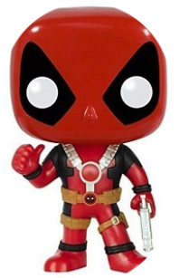
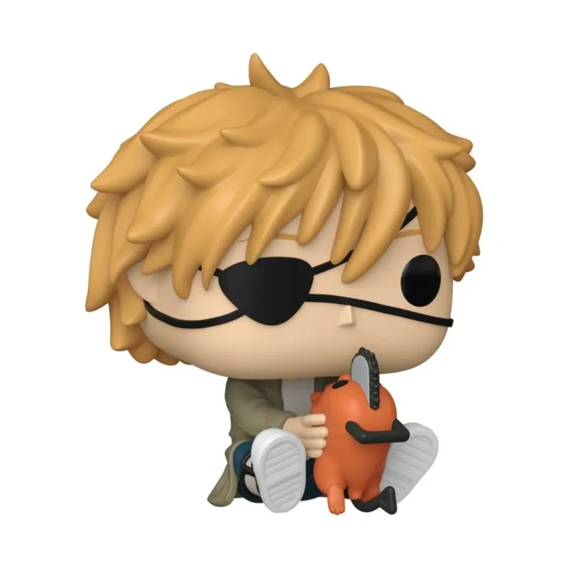

Wolverine
As garras estão à mostra! Em sua icônica forma de combate, comemore os 50 anos do Wolverine e adicione um toque mutante a sua coleção com o Boneco Funko Pop! Wolverine.
Escolha seu personagem favorito
As garras estão à mostra! Em sua icônica forma de combate, comemore os 50 anos do Wolverine e adicione um toque mutante a sua coleção com o Boneco Funko Pop! Wolverine.

Deadpool chegou para afiar suas lâminas e seu humor na sua coleção de anti-heróis! Reserve um lugar especial na sua coleção para o Boneco Funko Pop! Deadpool.

Destaque a força e a coragem da icônica heroína em uma versão estilizada e cheia de detalhes, trazendo todo o poder e carisma da heroína com o Boneco Funko Pop! Mulher Maravilha.
Figura colecionável Funko Pop da personagem Hatsune Miku em edição especial Cherry Blossom Boneco de vinil com design cabeçudo, medindo aproximadamente 10 cm de altura

Aumente o nível da sua coleção anime com o Boneco Funko Pop! Denji & Pochita! Direto do universo explosivo de Chainsaw Man, esta dupla inseparável chega pronta para enfrentar qualquer ameaça.